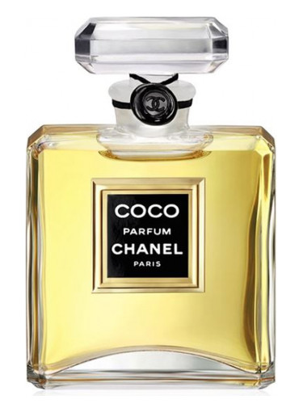

Хто така Коко?
Габріель Бонер Шанель (фр. Gabrielle Bonheur Chanel; 19 серпня 1883, Сомюр — 10 січня 1971, Лозанна), відома як Коко Шанель — французька кутюр'є, дизайнерка текстилю та прикрас, художниця по костюмах, підприємиця, реформаторка моди ХХ століття. Завдяки унісекс-модернізму і дорогій простоті Шанель стала іконою стилю. Вона принесла в жіночу моду комплексні парфуми (Chanel № 5), маленьку чорну сукню, приталений жакет, засмагу, знаменитий костюм Шанель (спідниця + жакет). Вплив Шанель на високу моду був таким сильним, що її, єдину з історії моди, журнал Тайм вніс до списку 100 найвпливовіших людей XX століття.

Історія успіху
В 1910 році Шанель відкрила магазин у Парижі, продаючи жіночі капелюшки. Протягом року дім моди перемістився на вулицю Камбон (Cambon), де і знаходиться понині. У 1912 році Шанель відкрила свій перший дім моди у Довілі, але Перша світова війна перервала її діяльність. У своїх моделях Шанель сповідувала дорогу простоту. Серед крилатих висловів дизайнерки: «Мода створена не для того, щоб дивувати публіку на показах. Вона створена для того, щоб одягати цю публіку» і «Моду не можна назвати модою, якщо її не носять на вулиці». У 1919 році відкрила дім моди в Парижі на вулиці Камбон. До цього часу Шанель вже мала клієнтів у всьому світі. Багато хто носили її фланелеві блейзери, спідниці вільного крою, довгі светри з джерсе, матроски і знаменитий костюм (спідниця + жакет). Сама Шанель носила коротку зачіску, маленькі капелюшки і сонячні окуляри. У 1920-х Шанель запровадила моду на засмагу, повернувшись із відпочинку на яхті із золотаво-бронзовою шкірою. Доти взірцевою була порцеляново-біла шкіра — вважалося, що лише люди нижчих класів можуть мати засмагу, оскільки працюють на сонці. Коко Шанель популяризувала маленьку чорну сукню, яку можна було носити протягом дня і вечора залежно від того доповнення аксесуарами. У 1926 році американський журнал Vogue прирівняв за універсальністю і популярністю маленьку чорну сукню до автомобіля «Ford». Попри величезний успіх моделей Шанель, у 1939 році вона закрила всі бутики і дім моди — почалася Друга світова війна. Багато кутюр'є покинули країну, але Шанель залишилася у Парижі. Після закінчення війни вона виїхала у Швейцарію.
Парфуми
Парфуми "Chanel № 5" У 1921 році випустила знаменитий аромат «Chanel № 5». До Шанель жіночі парфуми були моноароматами, які не володіли складними запахами. Шанель виступила новаторкою, запропонувавши жінкам перший синтезований парфум, що не повторює запах якоїсь однієї квітки.
Слід в світовій історії
У 1954 році 71-річна Шанель повернулася у світ моди і представила нову колекцію от кутюр. Через три сезони вона досягла колишньої слави і пошани. Шанель вдосконалила свої класичні моделі, і в результаті найбагатші та найвідоміші жінки стали постійними відвідувачками її показів. Костюм «від Шанель» став символом статусу нового покоління: виготовлений з твіду, з вузькою спідницею, жакетом без коміра, обшитим тасьмою, золотистими ґудзиками і накладними кишенями. Також знову представила жіночі сумочки, ювелірні вироби та взуття, які згодом мали приголомшливий успіх. У 1950–1960-ті Шанель співпрацювала з різними голлівудськими студіями, одягала таких зірок, як Одрі Гепберн та Елізабет Тейлор. У 1969 році легендарна акторка Кетрін Гепберн втілила Шанель у бродвейському мюзиклі «Коко».